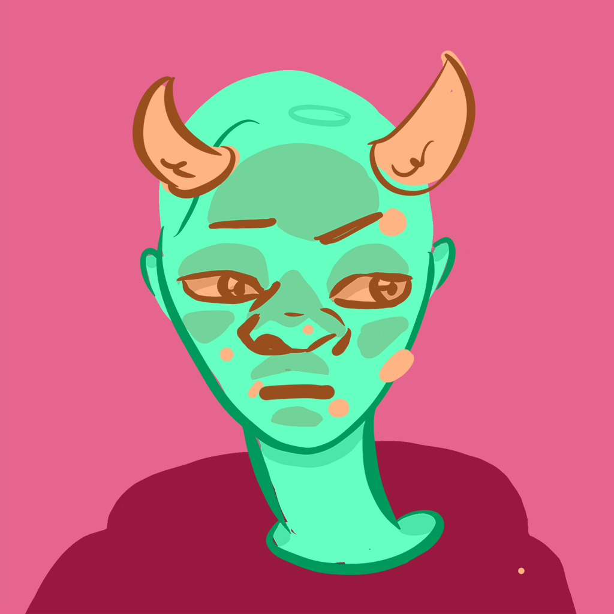
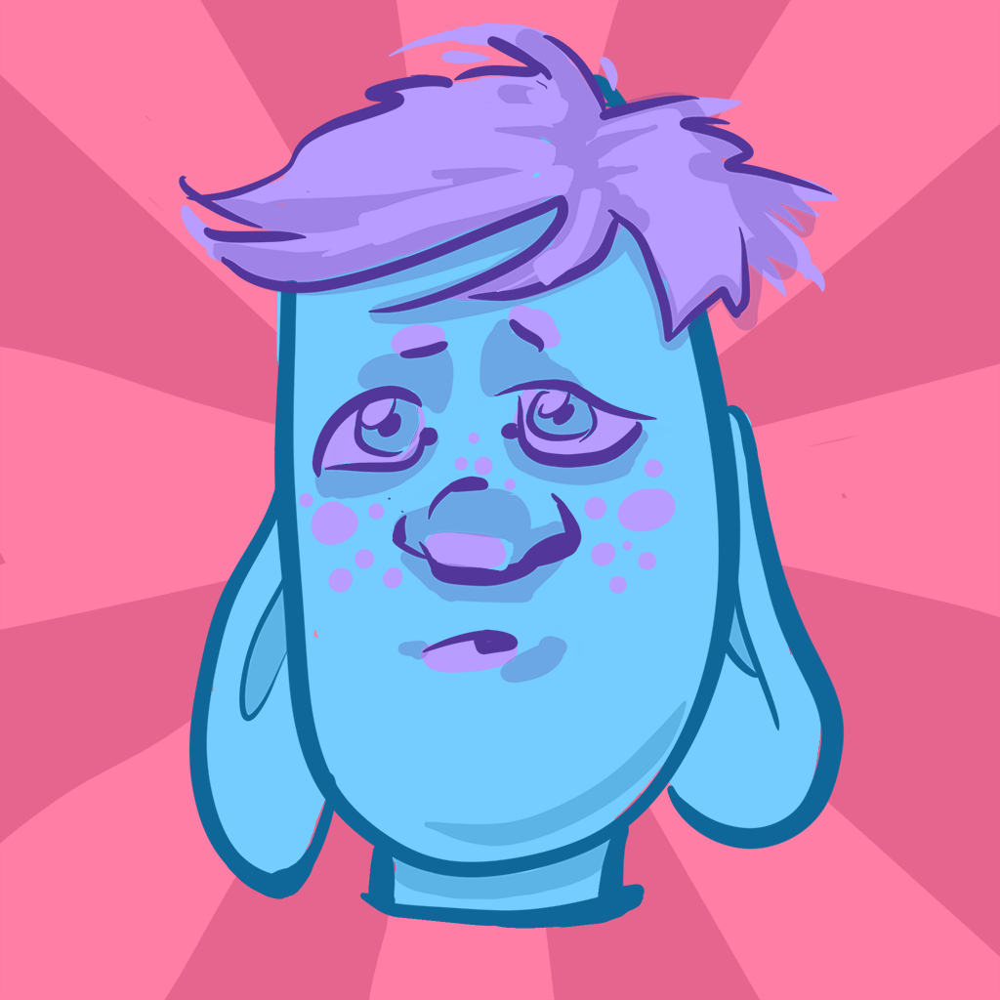
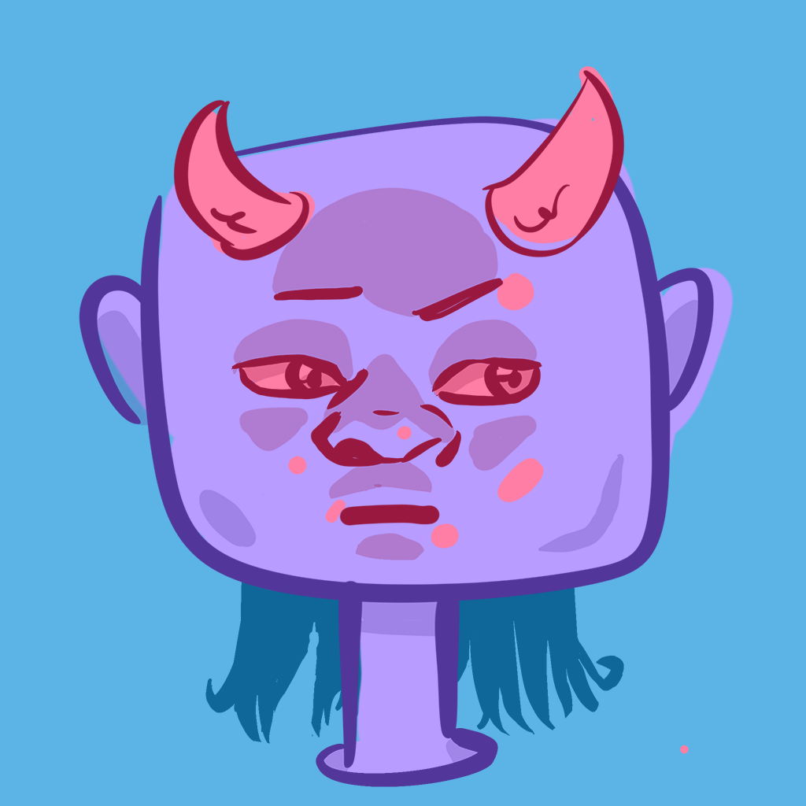

NFT Creator
After creating my first NFTs I noticed that NFT Collections were becoming very popular. These usually started with a base image with new elements and colours to create variations. I noticed this at the same time as I was realising something about art in general; that the art world doesn't actually reward originality, it rewards consistency. I got on to this line of thinking after seeing this TED Talk about the importance of familiarity in the field of sales. These NFT collections were a manifestation of this approach to artistic consistency and it got me asking what were the possibilities of creating multiple variations from a very small amount of elements, cutting out originality almost altogether, and focusing completely on consistency.
I also thought it would be an interesting coding challenge to come up with a script that combines image elements to create every possible variation of a small set of image elements.
  
The resulting artworks are the FRIENDGIBLES and the NFT Creator I made to create them can be downloaded from its GitHub Repository. This is the first time I've posted something on GitHub to actually be used by other people so, apologies if it's not pretty. The basics are you have a set of folders in a particular structure (it must be correct for the files to land in the right place!) then you have a colorise script which colorises the elements and a combine script that combines the elements into unique images.